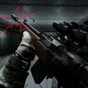

Mod
Make VPO-101 Great Again!
- Downloads
- 11,406
- Favourites
- 14
- Mod lists
- 19
This mod displayed a profile-binding notice on Forge.
The author marked this item as containing advertising.
Mods on Hiatus / Support Paused
- Status: No updates planned due to focus on other projects.
- Open Invitation: The community has full permission to update, modify, and redistribute these mods. Feel free to fork the repository and build your own version.
Some changes:
-
Now you can use suppressors, muzzle-brakes and compensators of 7.62x51mm weapons
-
Increases ergonomics (a little)
Instalation
- Download the
makevpo101greatagain.zip. - Drag and drop the
.zipfile directly into the root folder of your SPT installation. - Right-click the
.zipfile and select “Extract Here”. - The folders should merge automatically. If you get a prompt to overwrite files, say yes.

Version
1.3.0
SPT ~4.0.0
Fika: unknown
4,144 downloads5.7 KB
4.0 UPDATE
If some attachment is missing, please let me know.
VirusTotal: report 1
Version
1.2.0
SPT ~3.11.0
Fika: unknown
1,813 downloadsUnknown size
3.11 UPDATE
VirusTotal: report 1
Version
1.1.1
SPT ~3.10.0
Fika: unknown
2,251 downloadsUnknown size
Updated for SPT 3.10
VirusTotal: report 1
Version
1.1.0
SPT 3.8.0
Fika: unknown
1,855 downloadsUnknown size
3.8.0 UPDATE i hope this works
Updated the code logic to add the muzzles
VirusTotal: report 1